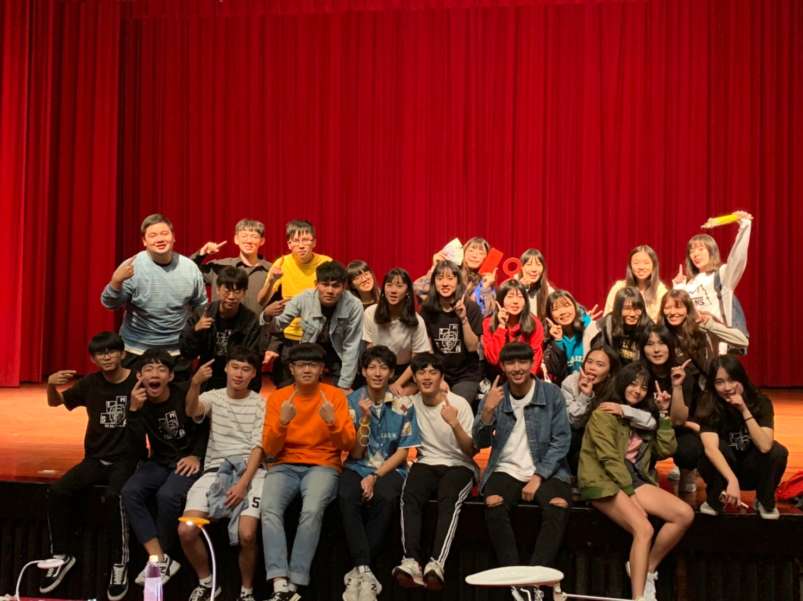

Skill
HTML
CSS
Java
Python
Project
大一上
在企業概論課程中擔任行銷的職位，販賣的品項是台東的黑孩子黑咖啡，過程中不僅學到了一個企業體如何營運的相關知識，透過上台報告增進自己的台風及口條，同時也能幫助到那些遠在台東的小朋友們。
大一下
管理學課程，我們去中原幼兒園進行服務，除了環境整理，我們還需要注意他們在遊玩時的安全，或是陪讀故事書，此外我們也有協助他們的運動會，擔任工作人員。
大二上
前端網頁設計，期中專案有關於國際學生證和創發中心，透過整理的介紹可以了解國際學生證的多元用處，以及學校所設立的創發中心有提供多樣性的資源以及服務，期末專案即將設計手機殼的銷售網頁。
Experience
高中-南湖班聯
受到高中好玩迎新的影響,開始對班聯會有所憧憬,高一就決定加入班聯,之後高二當上幹部,開始舉辦各式活動,新生迎新.校外迎新.校慶.耶誕晚會.寒訓.校成...讓我學習到很多東西,也認識到一群好夥伴,成為高中時一段美好回憶
大學-系學會
大學加入系學會,暑假擔任新生宿營的活動股,雖然有一半的暑假每天要早起練舞,晚上也要開會,但是我覺得相當值得,除了認識到其他系的好夥伴,最重要的是讓大一能夠玩得開心,開學之後也參與很多活動,資管之夜.密室逃脫.大胃王比賽...
Activities

資管X生科 迎新宿營 密室逃脫 資管之夜 資管X財金 大胃王